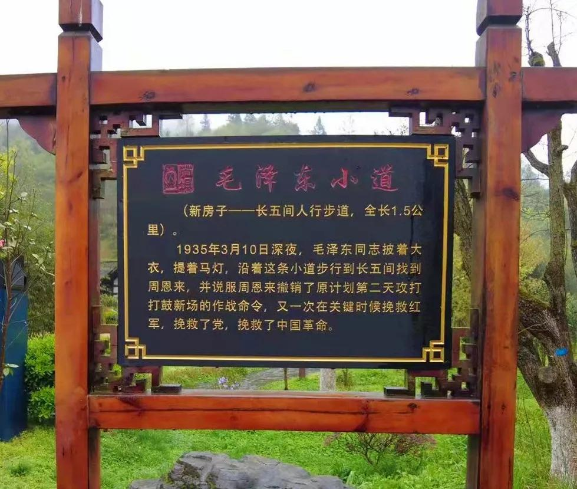
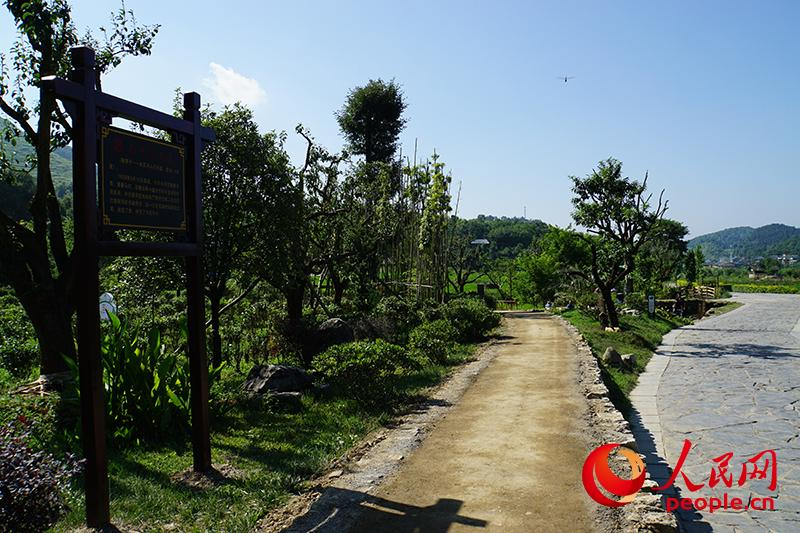

一盏马灯，一条两公里的小道，一句"再想一想"。
会址右后方，有一间独立的四列三间木房，这是毛泽东在苟坝会议期间的住址，矮小的木房子掩藏在一棵两人合抱粗的古朴树下。
1935年3月10日夜，会议多数人主张进攻打鼓新场，毛泽东一人反对。深夜，他提着一盏马灯，沿田埂小道步行近两公里，找到周恩来住处（长五间）陈述利弊，说服周恩来暂缓发令。
从毛泽东当年住地出发，步行前往周恩来居住的长五间，大约1.5公里路程。窄窄的乡间小道，坡坡坎坎，弯弯绕绕。这条小道后来被称为"毛泽东小道"或"真理小道"，住室保留当年陈设，小道如今可步行体验。
1. 毛泽东深夜提灯走的那条小道，后来被称为什么？
2. 他从自己住地走到周恩来住处，大约走了多远？